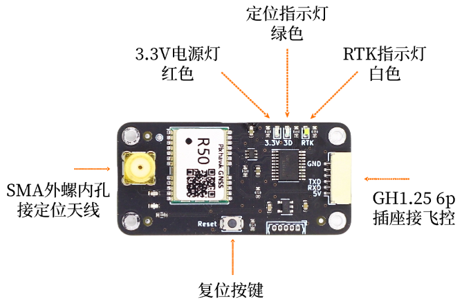
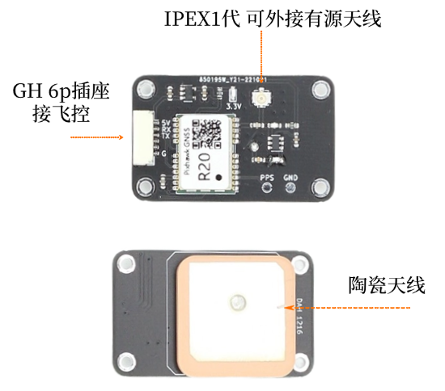
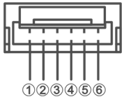
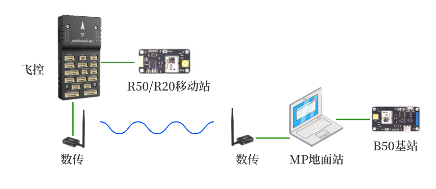
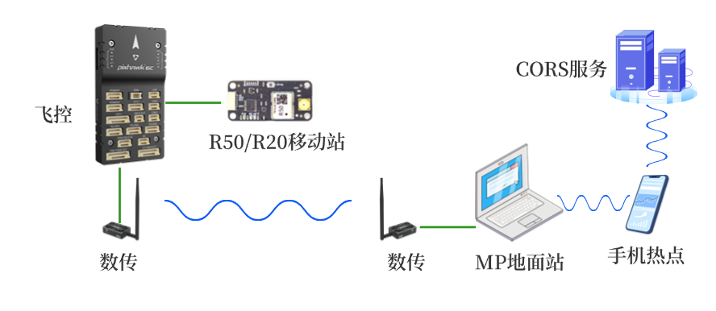

R50、R20板卡手册
点击链接观看视频：R50 B50快速安装
1 简介
R50模块为双频三系统高精度RTK模块，支持北斗3代，GPS以及伽利略导航系统。
R20模块为单频三系统高精度RTK模块，支持北斗3代，GPS以及伽利略导航系统。
主要指标如下图所示。
| 参数 | R50 （双频） | R20 （单频） |
|---|---|---|
| GNSS 接收频点 | GPS/QZSS: L1C/A, L5 BDS: B1I, B2a Galileo: E1, E5a |
GPS/QZSS: L1C/A BDS: B1I Galileo: E1 |
| UART 波特率 | 115200 8N1 | 115200 8N1 |
| 数据更新率 (Hz) | 5Hz | 5Hz |
| 定位精度 | GNSS 3D 2.5m CEP 50 D-GNSS <1.0m CEP 50 RTK 2cm+1ppm(水平) 6.5cm+1ppm(垂直) |
GNSS 3D 2.5m CEP 50 D-GNSS <1.0m CEP 50 RTK 2cm+1ppm(水平) 6.5cm+1ppm(垂直) |
| 天线 | 外接四臂螺旋 | 内置陶瓷 |
| 接口 | GH1.25 6pin SMA 母 GNSS |
GH1.25 6pin IPEX 1代 GNSS |
| 协议 | NMEA 0183 协议 4.00/4.10 版本 RTCM 3.0/3.2/ MSM4 (收发) MSM7 (仅收) |
NMEA 0183 协议 4.00/4.10 版本 RTCM 3.0/3.2/ MSM4 (收发) MSM7 (仅收) |
| 尺寸 | 50mm × 24mm | 43mm × 26mm |
主要区别
R20和R50在RTK固定解的情况下都能达到厘米级精度，区别在于R20为单频，要求天空完全开阔无遮挡，并且进入RTK固定解的时间较长。R50则允许天空有部分遮挡，并且进入RTK固定解的时间较快。
总体而言，R20的固定解比例远低于R50，仅建议作为入门学习，样机验证等等用途。在对定位精度和稳定性要求高的产品中，请选用R50，或其它双频，三频模块。
2 接口说明
R50接口

R20接口

- R50板上SMA为天线接口，板上已设计3.3V供电电路，建议使用四臂螺旋天线或碟形天线，请注意天线需支持L1 L5频段。
- R20板上已有陶瓷天线，使用时请保证陶瓷天线指向天空。也可以外接其它增益更高的有源天线，外接其它天线的情况下请将板上陶瓷天线指向地面。
- GH1.25插座为供电，UART接口，在Rover模式下接收差分数据，发送NMEA数据，在Base模式下发送差分数据。引脚定义如下。

| 引脚 | 定义 | 电平 |
|---|---|---|
| 1 | VCC | MAX 5.3V |
| 2 | RXD收 | 3.3V |
| 3 | TXD发 | 3.3V |
| 4 | NC | - |
| 5 | NC | - |
| 6 | GND | GND |
- R50板上设计了指示灯，以显示当前定位模式，具体定义如下：
| 模式 | 3D 绿色 | RTK 白色 | 定位状态 |
|---|---|---|---|
| Rover | 灭 亮 亮 亮 |
灭 灭 闪 亮 |
未定位 3D单点定位 RTK浮动解 RTK固定解 |
3 Rover模式
R50和R20仅支持Rover移动站模式。
Rover模式下如需RTK精确定位，需要将基站差分数据通过串口发送给R50/R20，R50/R20会自动解算。基站差分数据可以来自自建基站（B50 Base模式），也可以来自第三方的CORS服务商，例如千寻位置，六分科技，中移位置等。此时需要在Base和Rover之间有数据链路进行通讯。第三方的CORS服务商通常提供互联网方式访问，可选NTRIP协议或SDK方式。自建基站通常采用数传电台，也可视实际传输距离考虑其它通讯方式，通讯带宽不能低于19200波特率。
Rover模式下天线尽量保持在无遮挡环境，通常Rover会处在运动中，如果进入遮挡较多的地点，可能会退出RTK Fix状态。
无人机应用中通常配合B50基站模式使用，连接示意图如下。

也可使用第三方的CORS服务，连接示意图如下。
